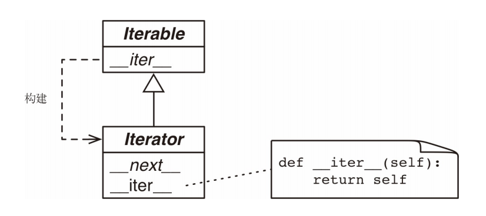

可迭代对象，迭代器和生成器
可迭代对象和迭代器
我们先了解下可迭代对象和迭代器之间的关系，在《流畅的Python》中，这样定义：

具体的 Iterable._iter_ 方法应该返回一个 Iterator 实例，具体的 Iterator 类必须实现 _next_ 方法，Iterator._iter_ 方法直接返回实例本身 。
abc.Iterator 类，摘自Lib/_collections_abc.py
class Iterable(metaclass=ABCMeta):
__slots__ = ()
@abstractmethod
def __iter__(self):
while False:
yield None
@classmethod
def __subclasshook__(cls, C):
if cls is Iterable:
return _check_methods(C, "__iter__")
return NotImplemented
class Iterator(Iterable):
__slots__ = ()
@abstractmethod
def __next__(self):
'Return the next item from the iterator. When exhausted, raise StopIteration'
raise StopIteration
def __iter__(self):
return self
@classmethod
def __subclasshook__(cls, C):
if cls is Iterator:
return _check_methods(C, '__iter__', '__next__')
return NotImplemented
其中的魔术方法__subclasshook__作用在于，方便检查对象x是否是可迭代对象或者迭代器，即使对象 x 所属的类不是Iterator 类的真实子类或虚拟子类，也能这样检查。
生成器
生成器算是一种特殊的迭代器，可以记住上下文，接着上次返回的位置继续执行。生成器能做到迭代器能做的所有事，而且生成器也是高效的，使用生成器表达式取代列表解析可以同时节省内存。除了创建和保存程序状态的自动方法，当发生器终结时，还会自动抛出StopIteration异常。它的实现有以下两种方式：
- 函数内包含
yield (I for I in range(10)
# 使用列表推导式生成一个1到10的列表
l = [i for i in range(1,11)]
print(l) # [1, 2, 3, 4, 5, 6, 7, 8, 9, 10]
# 使用生成器表达式生成一个生成器（迭代器）
l = (i for i in range(1,11))
print(l) # <generator object <genexpr> at 0x000002004151AA50>
一种优雅的实现读取大文件的方式
import functools
def chunk_file_reader(fp, block_size):
for chunk in iter(functools.partial(fp.read, block_size), bytes()):
yield chunk
def do_something(chunk):
pass
def main(file_path):
with open(file_path, 'rb') as fp:
for chunk in chunk_file_reader(fp, 1024 * 1024 * 1):
do_something(chunk)
参考
- 《流畅的Python》第十四章